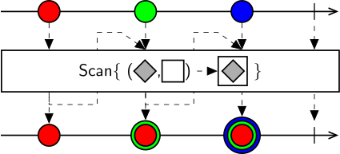

Class Scan
Represents an expression builder which accumulates the values of an observable sequence using the encapsulated workflow.

The nested workflow specifying the accumulation function must return a sequence of the same type as the accumulator. The type of the accumulator is specified by the seed sequence, if an explicit seed sequence is provided as a second input. Otherwise, the accumulator will be of the same type as the elements in the source sequence, and will be initialized to the first element.
When a new element is received from the source sequence, it is paired with the current value in the accumulator and passed as an input notification to the nested workflow. Values emitted by the nested sequence will update the state of the accumulator.
Warning
The nested sequence may be synchronous or asynchronous with respect to notifications from the source sequence. However, it is strongly recommended that computation of the accumulation function is performed synchronously to ensure a correspondence between the notifications received from the source sequence and the cumulative values emitted by the result sequence.
public class Scan : WorkflowExpressionBuilder, IWorkflowExpressionBuilder, INamedElement, IPropertyMappingBuilder, IExpressionBuilder- Inheritance
-
Scan
- Implements
- Inherited Members
- Extension Methods
Constructors
Scan()
Initializes a new instance of the Scan class.
public Scan()Scan(ExpressionBuilderGraph)
Initializes a new instance of the Scan class with the specified expression builder workflow.
public Scan(ExpressionBuilderGraph workflow)Parameters
workflowExpressionBuilderGraphThe expression builder workflow instance that will be used by this builder to generate the output expression tree.
Properties
ArgumentRange
Gets the range of input arguments that this expression builder accepts.
public override Range<int> ArgumentRange { get; }Property Value
Methods
Build(IEnumerable<Expression>)
Generates an Expression node from a collection of input arguments. The result can be chained with other builders in a workflow.
public override Expression Build(IEnumerable<Expression> arguments)Parameters
argumentsIEnumerable<Expression>A collection of Expression nodes that represents the input arguments.
Returns
- Expression
An Expression tree node.